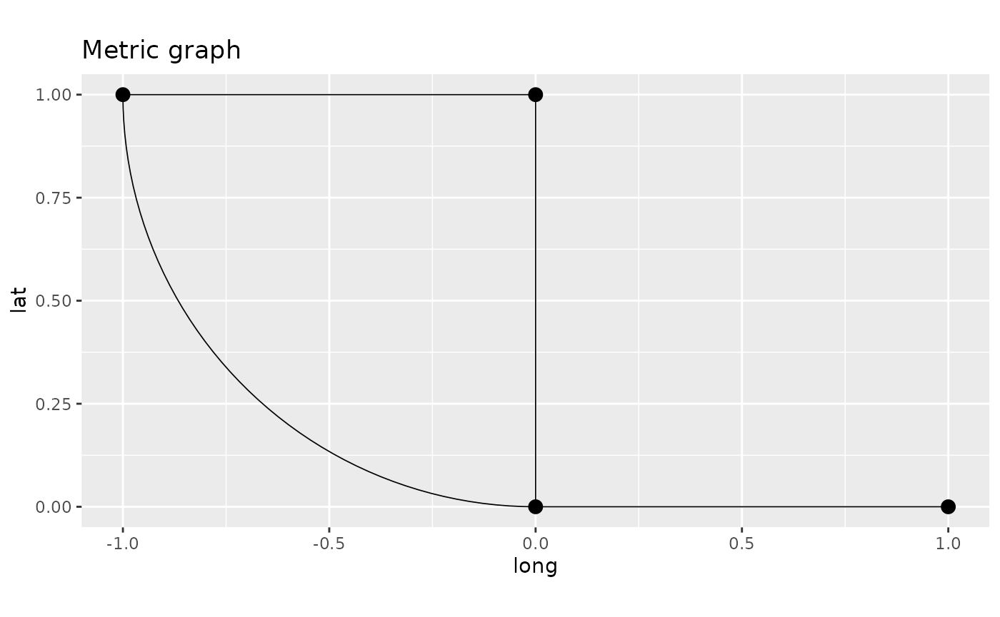
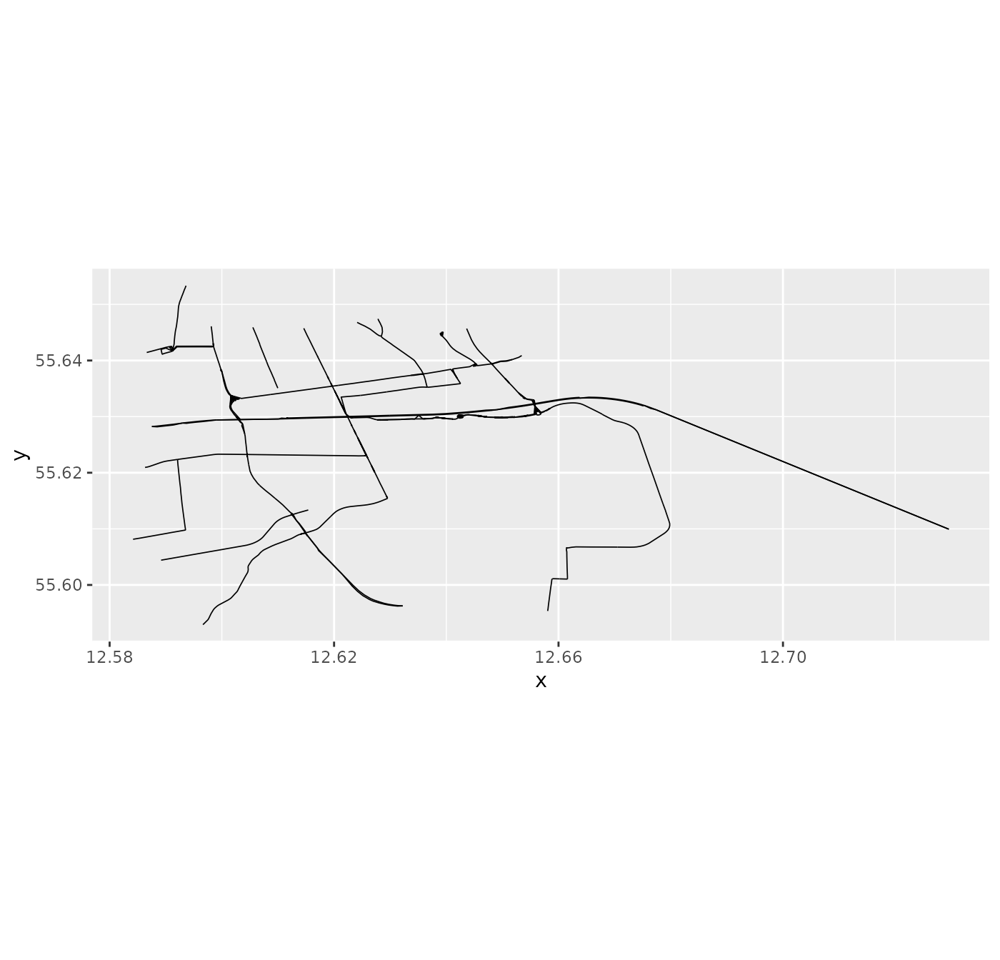
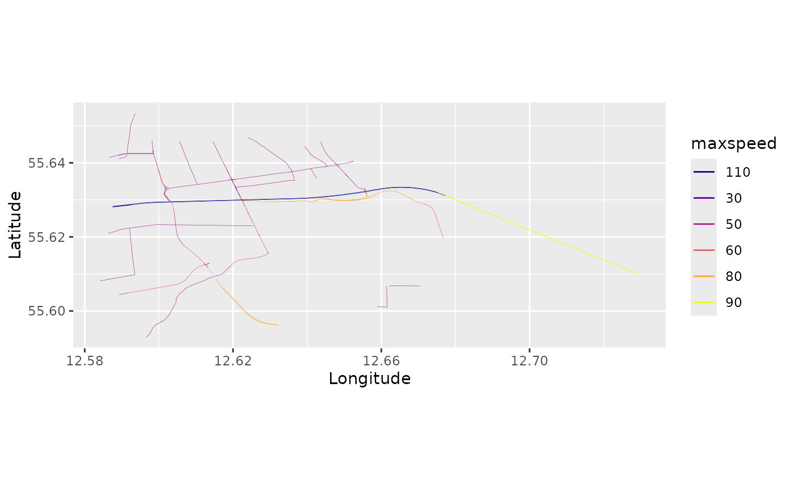
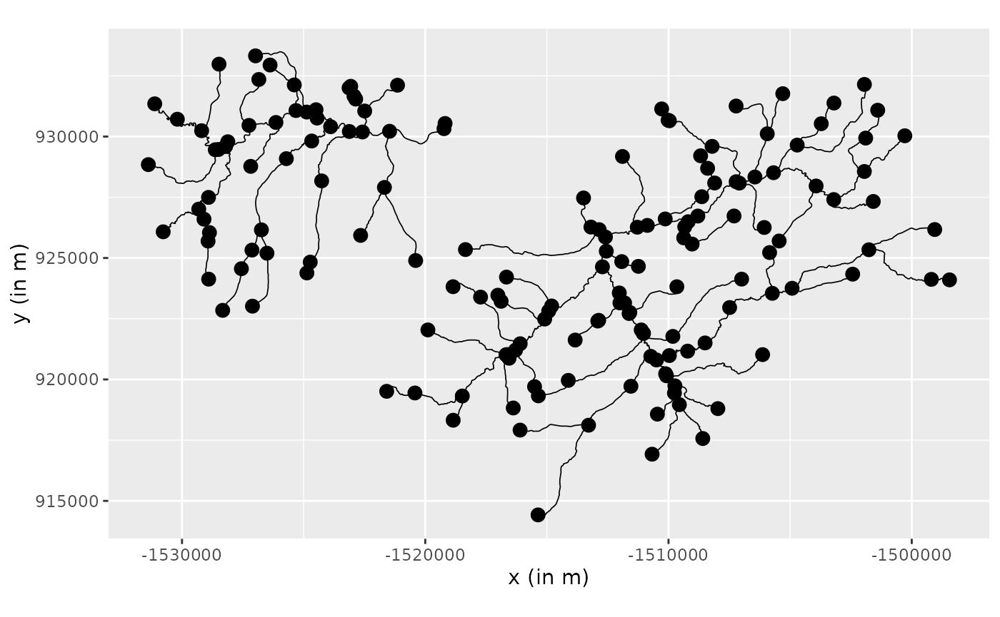
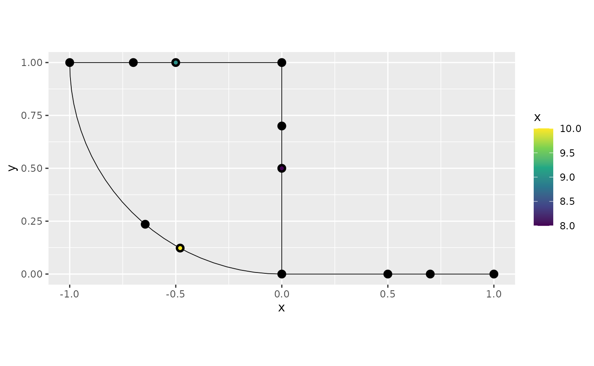
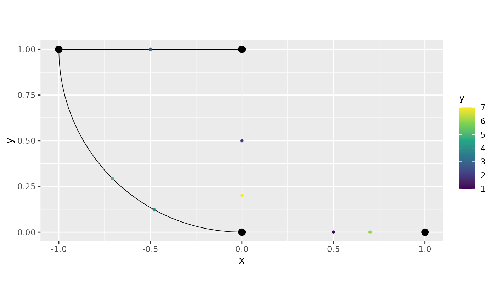

Working with metric graphs
David Bolin, Alexandre B. Simas, and Jonas Wallin
Created: 2022-11-23. Last modified: 2024-03-26.
Source:vignettes/metric_graph.Rmd
metric_graph.RmdIntroduction
Networks such as street or river networks are examples of metric graphs. A compact metric graph \(\Gamma\) consists of a set of finitely many vertices \(\mathcal{V}=\{v_i\}\) and a finite set \(\mathcal{E}=\{e_j\}\) of edges connecting the vertices. Each edge \(e\) is a curve of finite length \(l_e\) that connects two vertices. These curves are parameterized by arc length and a location \(s\in \Gamma\) is a position on an edge, and can thus be represented as a touple \((e,t)\) where \(t\in[0,l_e]\). Compared to regular graphs, where one typically defines functions on the vertices, we are for metric graphs interested in function that are defined on both the vertices and the edges.
In this vignette we will introduce the metric_graph
class of the MetricGraph package. This class provides a
user friendly representation of metric graphs, and we will show how to
use the class to construct and visualize metric graphs, add data to
them, and work with functions defined on the graphs.
For details about Gaussian processes and inference on metric graphs, we refer to the Vignettes
Constructing metric graphs
Basic constructions and properties
A metric graph can be constructed in two ways. The first is to
specify all edges in the graph as a list object, where each
entry is a matrix. To illustrate this, we first construct the following
edges
edge1 <- rbind(c(0,0),c(1,0))
edge2 <- rbind(c(0,0),c(0,1))
edge3 <- rbind(c(0,1),c(-1,1))
theta <- seq(from=pi,to=3*pi/2,length.out = 50)
edge4 <- cbind(sin(theta),1+ cos(theta))
edges = list(edge1, edge2, edge3, edge4)We can now create the graph based on the edges object as
follows
graph <- metric_graph$new(edges = edges)
graph$plot()
The plot function that was used to create the plot above has various
parameters to set the sizes and colors of the vertices and edges, and it
has a plotly argument to visualize the graph in 3D. For
this to work, the plotly library must be installed.
graph$plot(plotly = TRUE, vertex_size = 5, vertex_color = "blue",
edge_color = "red", edge_width = 2)It is also important to know that the 2d version of the
plot() method returns a ggplot2 object and can
be modified as such. For instance:
p <- graph$plot()
p + ggplot2::labs(title = "Metric graph",
x = "long", y = "lat")
Similarly, the 3d version of the plot()
method returns a plotly object that can also be modified.
For instance:
p <- graph$plot(plotly = TRUE)
p <- plotly::layout(p, title = "Metric graph",
scene = list(xaxis=
list(title = "Long"),yaxis=list(title = "Lat")))
pWe can now obtain various properties of the graph: The vertex matrix, which specifies the Euclidian coordinates of the vertices is
graph$V## [,1] [,2]
## [1,] 0 0
## [2,] 1 0
## [3,] 0 1
## [4,] -1 1and the edge matrix that specified the edges of the graph (i.e., which vertices that are connected by edges) is
graph$E## [,1] [,2]
## [1,] 1 2
## [2,] 1 3
## [3,] 3 4
## [4,] 1 4To obtain the geodesic (shortest path) distance between the vertices,
we can use the function compute_geodist:
graph$compute_geodist()
graph$geo_dist## $.vertices
## [,1] [,2] [,3] [,4]
## [1,] 0.000000 1.000000 1 1.570729
## [2,] 1.000000 0.000000 2 2.570729
## [3,] 1.000000 2.000000 0 1.000000
## [4,] 1.570729 2.570729 1 0.000000The second option it to construct the graph using two matrices
V and E that specify the locations (in
Euclidean space) of the vertices and the edges. In this case, it is
assumed that the graph only has straight edges:
V <- rbind(c(0, 0), c(1, 0), c(0, 1), c(-1, 1))
E <- rbind(c(1, 2), c(1, 3), c(3, 4), c(4, 1))
graph2 <- metric_graph$new(V = V, E = E)## Starting graph creation...## LongLat is set to FALSE## The current tolerances are:## Vertex-Vertex 0.001## Vertex-Edge 0.001## Edge-Edge 0## Setup edges and merge close vertices## Snap vertices to close edges## Total construction time: 0.89 secs
graph2$plot()A third option is to create a graph from a SpatialLines
object:
library(sp)
line1 <- Line(rbind(c(0,0),c(1,0)))
line2 <- Line(rbind(c(0,0),c(0,1)))
line3 <- Line(rbind(c(0,1),c(-1,1)))
theta <- seq(from=pi,to=3*pi/2,length.out = 50)
line4 <- Line(cbind(sin(theta),1+ cos(theta)))
Lines = sp::SpatialLines(list(Lines(list(line1),ID="1"),
Lines(list(line2),ID="2"),
Lines(list(line3),ID="3"),
Lines(list(line4),ID="4")))
graph <- metric_graph$new(edges = Lines)
graph$plot()
A final option is to create from a MULTILINESTRING
object:
library(sf)
line1 <- st_linestring(rbind(c(0,0),c(1,0)))
line2 <- st_linestring(rbind(c(0,0),c(0,1)))
line3 <- st_linestring(rbind(c(0,1),c(-1,1)))
theta <- seq(from=pi,to=3*pi/2,length.out = 50)
line4 <- st_linestring(cbind(sin(theta),1+ cos(theta)))
multilinestring = st_multilinestring(list(line1, line2, line3, line4))
graph <- metric_graph$new(edges = multilinestring)
graph$plot()Tolerances for merging vertices and edges
The constructor of the graph has one argument tolerance
which is used for connecting edges that are close in Euclidean space.
Specifically, the tolerance argument is given as a list
with three elements:
-
vertex_vertexvertices that are closer than this number are merged (the default value is1e-7) -
vertex_edgeif a vertex at the end of one edge is closer than this number to another edge, this vertex is connected to that edge (the default value is1e-7) -
edge_edgeif two edges at some point are closer than this number, a new vertex is added at that point and the two edges are connected (the default value is0which means that the option is not used)
These options are often needed when constructing graphs based on real data, for example from OpenStreetMap as we will see later. To illustrate these options, suppose that we want to construct a graph from the following three edges:
edge1 <- rbind(c(0,0),c(1,0))
edge2 <- rbind(c(0,0.03),c(0,0.75))
edge3 <- rbind(c(-1,1),c(0.5,0.03))
edge4 <- rbind(c(0,0.75), c(0,1))
edges = list(edge1, edge2, edge3, edge4)
graph3 <- metric_graph$new(edges = edges)
graph3$plot(degree = TRUE)
print(graph3$nV)## [1] 7
We added the option degree=TRUE to the plot here to
visualize the degrees of each vertex. As expected, one sees that all
vertices have degree 1, and none of the three edges are connected. If
these are streets in a street network, one might suspect that the two
vertices at \((0,0)\) and \((0,0.03)\) really should be the same vertex
so that the two edges are connected. This can be adjusted by increasing
the vertex_vertex tolerance:
graph3 <- metric_graph$new(edges = edges, tolerance = list(vertex_vertex = 0.05))
graph3$plot(degree = TRUE)
One might also want to add the vertex at \((0.5, 0.03)\) as a vertex on the first
edge, so that the two edges there are connected. This can be done by
adjusting the vertex_edge tolerance:
graph3 <- metric_graph$new(edges = edges, tolerance = list(vertex_vertex = 0.05,
vertex_edge = 0.1))
graph3$plot(degree = TRUE)
We can see that the vertex at \((0.5,0)\) was indeed connected with the
edge from \((0,0)\) to \((1,0)\) and that vertex now has degree 3
since it is connected with three edges. One can also note that the
edges object that was used to create the graph is modified
internally in the metric_graph object so that the
connections are visualized correctly in the sense that all edges are
actually shown as connected edges.
Finally, to add a vertex at the intersection between
edge2 and edge3 we can adjust the
edge_edge tolerance:
graph3 <- metric_graph$new(edges = edges, tolerance = list(vertex_vertex = 0.2,
vertex_edge = 0.1,
edge_edge = 0.001))
graph3$plot(degree = TRUE)
Now, the structure of the metric graph does not change if we add or
remove vertices of degree 2. Because of this,one might want to remove
vertices of degree 2 since this can reduce computational costs. This can
be done by setting the remove_deg2 argument while creating
the graph:
graph3 <- metric_graph$new(edges = edges, tolerance = list(vertex_vertex = 0.2,
vertex_edge = 0.1,
edge_edge = 0.001),
remove_deg2 = TRUE)
graph3$plot(degree = TRUE)
Observe that one vertex of degree 2 was not removed. This is due to
the fact that if we consider the direction, this vertex has directions
incompatible for removal. We can see this by setting the argument
direction=TRUE in the plot() method:
graph3$plot(direction = TRUE)Characteristics of the graph
A brief summary of the main characteristics of the graph can be
obtained by the compute_characteristics() method:
graph3$compute_characteristics()We can, then, view those characteristics by simply printing the
metric_graph object:
graph3## A metric graph with 6 vertices and 6 edges.
##
## Vertices:
## Degree 1: 3; Degree 2: 1; Degree 3: 1; Degree 4: 1;
## With incompatible directions: 1
##
## Edges:
## Lengths:
## Min: 0.3533333 ; Max: 1.190873 ; Total: 3.788107
## Weights:
## Min: 1 ; Max: 1
## That are circles: 0
##
## Graph units:
## Vertices unit: None ; Lengths unit: None
##
## Longitude and Latitude coordinates: FALSE
##
## Some characteristics of the graph:
## Connected: TRUE
## Has loops: FALSE
## Has multiple edges: FALSE
## Is a tree: FALSE
## Distance consistent: unknown## To check if the graph satisfies the distance consistency, run the `check_distance_consistency()` method.## Has Euclidean edges: unknown## To check if the graph has Euclidean edges, run the `check_euclidean()` method.Observe that we do not know that the graph has Euclidean edges. We
can check by using the check_euclidean() method:
graph3$check_euclidean()Let us view the characteristics again:
graph3## A metric graph with 6 vertices and 6 edges.
##
## Vertices:
## Degree 1: 3; Degree 2: 1; Degree 3: 1; Degree 4: 1;
## With incompatible directions: 1
##
## Edges:
## Lengths:
## Min: 0.3533333 ; Max: 1.190873 ; Total: 3.788107
## Weights:
## Min: 1 ; Max: 1
## That are circles: 0
##
## Graph units:
## Vertices unit: None ; Lengths unit: None
##
## Longitude and Latitude coordinates: FALSE
##
## Some characteristics of the graph:
## Connected: TRUE
## Has loops: FALSE
## Has multiple edges: FALSE
## Is a tree: FALSE
## Distance consistent: TRUE
## Has Euclidean edges: TRUEIt can happen that we have that the graph does not have Euclidean
edges without the need to check the distance consistency. However, if
one wants to check if the graph satisfies the distance consistency
assumption, one can run the check_distance_consistency()
function:
graph3$check_distance_consistency()Further, the individual characteristics can be accessed (after
running the compute_characteristics() method) through the
characteristics component of the graph object:
graph3$characteristics## $has_loops
## [1] FALSE
##
## $connected
## [1] TRUE
##
## $has_multiple_edges
## [1] FALSE
##
## $is_tree
## [1] FALSE
##
## $distance_consistency
## [1] TRUE
##
## $euclidean
## [1] TRUESummaries of metric graphs
We can also obtain a summary of the informations contained on a
metric graph object by using the summary() method. Let us
obtain a summary of informations of graph3:
summary(graph3)## A metric graph object with:
##
## Vertices:
## Total: 6
## Degree 1: 3; Degree 2: 1; Degree 3: 1; Degree 4: 1;
## With incompatible directions: 1
##
## Edges:
## Total: 6
## Lengths:
## Min: 0.3533333 ; Max: 1.190873 ; Total: 3.788107
## Weights:
## Min: 1 ; Max: 1
## That are circles: 0
##
## Graph units:
## Vertices unit: None ; Lengths unit: None
##
## Longitude and Latitude coordinates: FALSE
##
## Some characteristics of the graph:
## Connected: TRUE
## Has loops: FALSE
## Has multiple edges: FALSE
## Is a tree: FALSE
## Distance consistent: TRUE
## Has Euclidean edges: TRUE
##
## Computed quantities inside the graph:
## Laplacian: FALSE ; Geodesic distances: TRUE
## Resistance distances: FALSE ; Finite element matrices: FALSE
##
## Mesh: The graph has no mesh!
##
## Data: The graph has no data!
##
## Tolerances:
## vertex-vertex: 0.2
## vertex-edge: 0.1
## edge-edge: 0.001Observe that there are some quantities that were not computed on the
summary. We can see how to compute them by setting the argument
messages to TRUE:
summary(graph3, messages = TRUE)## A metric graph object with:
##
## Vertices:
## Total: 6
## Degree 1: 3; Degree 2: 1; Degree 3: 1; Degree 4: 1;
## With incompatible directions: 1
##
## Edges:
## Total: 6
## Lengths:
## Min: 0.3533333 ; Max: 1.190873 ; Total: 3.788107
## Weights:
## Min: 1 ; Max: 1
## That are circles: 0
##
## Graph units:
## Vertices unit: None ; Lengths unit: None
##
## Longitude and Latitude coordinates: FALSE
##
## Some characteristics of the graph:
## Connected: TRUE
## Has loops: FALSE
## Has multiple edges: FALSE
## Is a tree: FALSE
## Distance consistent: TRUE
## Has Euclidean edges: TRUE
##
## Computed quantities inside the graph:
## Laplacian: FALSE ; Geodesic distances: TRUE## To compute the Laplacian, run the 'compute_laplacian()' method.## Resistance distances: FALSE ; Finite element matrices: FALSE## To compute the resistance distances, run the 'compute_resdist()' method.## To compute the finite element matrices, run the 'compute_fem()' method.##
## Mesh: The graph has no mesh!## To build the mesh, run the 'build_mesh()' method.##
## Data: The graph has no data!## To add observations, use the 'add_observations()' method.##
## Tolerances:
## vertex-vertex: 0.2
## vertex-edge: 0.1
## edge-edge: 0.001Finally, the summary() can also be accessed from the
metric graph object:
graph3$summary()## A metric graph object with:
##
## Vertices:
## Total: 6
## Degree 1: 3; Degree 2: 1; Degree 3: 1; Degree 4: 1;
## With incompatible directions: 1
##
## Edges:
## Total: 6
## Lengths:
## Min: 0.3533333 ; Max: 1.190873 ; Total: 3.788107
## Weights:
## Min: 1 ; Max: 1
## That are circles: 0
##
## Graph units:
## Vertices unit: None ; Lengths unit: None
##
## Longitude and Latitude coordinates: FALSE
##
## Some characteristics of the graph:
## Connected: TRUE
## Has loops: FALSE
## Has multiple edges: FALSE
## Is a tree: FALSE
## Distance consistent: TRUE
## Has Euclidean edges: TRUE
##
## Computed quantities inside the graph:
## Laplacian: FALSE ; Geodesic distances: TRUE
## Resistance distances: FALSE ; Finite element matrices: FALSE
##
## Mesh: The graph has no mesh!
##
## Data: The graph has no data!
##
## Tolerances:
## vertex-vertex: 0.2
## vertex-edge: 0.1
## edge-edge: 0.001Vertices and edges
The metric graph object has the edges and
vertices elements in its list. We can get a quick summary
from them by calling these elements:
graph3$vertices## Vertices of the metric graph
##
## Longitude and Latitude coordinates: FALSE
##
## Summary:
## x y Degree Indegree Outdegree Problematic
## 1 0.0 0.0000000 2 0 2 TRUE
## 2 1.0 0.0000000 1 1 0 FALSE
## 3 -1.0 1.0000000 1 0 1 FALSE
## 4 0.5 0.0300000 3 2 1 FALSE
## 5 0.0 1.0000000 1 1 0 FALSE
## 6 0.0 0.3533333 4 2 2 FALSEand
graph3$edges## Edges of the metric graph
##
## Longitude and Latitude coordinates: FALSE
##
## Summary:
##
## Edge 1 (first and last coordinates):
## x y
## 0.0 0.00
## 0.5 0.03
## Total number of coordinates: 2
## Edge length: 0.5008992
## Weight: 1
##
## Edge 2 (first and last coordinates):
## x y
## 0 0.0000000
## 0 0.3533333
## Total number of coordinates: 2
## Edge length: 0.3533333
## Weight: 1
##
## Edge 3 (first and last coordinates):
## x y
## -1 1.0000000
## 0 0.3533333
## Total number of coordinates: 2
## Edge length: 1.190873
## Weight: 1
##
## Edge 4 (first and last coordinates):
## x y
## 0 0.3533333
## 0 1.0000000
## Total number of coordinates: 4
## Edge length: 0.6466667
## Weight: 1## # 2 more edges## # Use `print(n=...)` to see more edgesWe can also look at individual edges and vertices. For example, let us look at vertice number 2:
graph3$vertices[[2]]## Vertex 2 of the metric graph
##
## Longitude and Latitude coordinates: FALSE
##
## Summary:
## x y Degree Indegree Outdegree Problematic
## 1 0 1 1 0 FALSESimilarly, let us look at edge number 4:
graph3$edges[[4]]## Edge 4 of the metric graph
##
## Longitude and Latitude coordinates: FALSE
##
## Coordinates of the vertices of the edge:
## x y
## 0 0.3533333
## 0 1.0000000
##
## Coordinates of the edge:
## x y
## 0 0.3533333
## 0 0.7500000
## 0 0.7500000
## 0 1.0000000## Relative positions of the coordinates on the graph edges were not computed.## To compute them, run the `compute_PtE_edges()` method.##
## Total number of coordinates: 4
## Edge length: 0.6466667
## Weight: 1We have a message informing us that the relative positions of the
edges were not computed. They are used to produce better plots when
using the plot_function() method, see the section
“Improving the plot obtained by plot_function” below. To
compute the relative positions, we run the
compute_PtE_edges() method:
graph3$compute_PtE_edges()Now, we take a look at edge number 4 again:
graph3$edges[[4]]## Edge 4 of the metric graph
##
## Longitude and Latitude coordinates: FALSE
##
## Coordinates of the vertices of the edge:
## x y
## 0 0.3533333
## 0 1.0000000
##
## Coordinates of the edge:
## x y
## 0 0.3533333
## 0 0.7500000
## 0 0.7500000
## 0 1.0000000
##
## Relative positions of the edge:
## Edge number Distance on edge
## 2 1.0000000
## 4 0.6134021
## 4 0.6134021
## 4 1.0000000
##
## Total number of coordinates: 4
## Edge length: 0.6466667
## Weight: 1Understanding coordinates on graphs
The locations of the vertices are specified in Euclidean coordinates.
However, when specifying a position on the graph, it is not practical to
work with Euclidean coordinates since not all locations in Euclidean
space are locations on the graph. It is instead better to specify a
location on the graph by the touple \((i,
t)\), where \(i\) denotes the
number of the edge and \(t\) is the
location on the edge. The location \(t\) can either be specified as the distance
from the start of the edge (and then takes values between 0 and the
length of the edge) or as the normalized distance from the start of the
edge (and then takes values between 0 and 1). The function
coordinates can be used to convert between coordinates in
Euclidean space and locations on the graph. For example the location at
distance 0.2 from the start of the second edge is:
## [,1] [,2]
## [1,] 0 0.2In this case, since the edge has length 1, the location of the point at normalized distance 0.2 from the start of the edge is the same:
## [,1] [,2]
## [1,] 0 0.2The function can also be used to find the closest location on the graph for a location in Euclidean space:
## [,1] [,2]
## [1,] 2 0.2In this case, the normalized argument decides whether
the returned value should be given in normalized distance or not.
Methods for working with real data
To illustrate the useage of metric_graph on some real
data, we use the osmdata package to download data from
OpenStreetMap. In the following code, we extract highways in the city of
Copenhagen:
library(osmdata)
set_overpass_url("https://maps.mail.ru/osm/tools/overpass/api/interpreter")
call <- opq(bbox = c(12.4,55.5,12.65,55.9))
call <- add_osm_feature(call, key = "highway",value=c("motorway", "primary",
"secondary"))
data <- osmdata_sp(call)
graph5 <- metric_graph$new(SpatialLines(data$osm_lines@lines))
graph5$plot(vertex_size = 0)
There are a few things to note about data like this. The first is that the coordinates are given in Longitude and Latitude. Because of this, the edge lengths are by default given in degrees, which may result in very small numbers:
range(graph5$get_edge_lengths())## [1] 0.001000842 0.111550344This may cause numerical instabilities when dealing with random
fields on the graph, and it also makes it difficult to interpret results
(unless one has a good intuition about distances in degrees). To avoid
such problems, it is better to set the longlat argument
when constructing the graph:
graph5 <- metric_graph$new(SpatialLines(data$osm_lines@lines), longlat = TRUE)This tells the constructor that the coordinates are given in Longitude and Latitude and that distances should be calculated in km. So if we now look at the edge lengths, they are given in km:
range(graph5$get_edge_lengths())## Units: [km]
## [1] 0.001652242 11.209690354The second thing to note is that the constructor gave a warning that
the graph is not connected. This might not be ideal for modeling and we
may want to study the different connected components separately. If this
is not a concern, one can set the argument
check_connected = FALSE while creating the graph. In this
case the check is not done and no warning message is printed. To
construct all connected components, we can create a
graph_components object:
graphs <- graph_components$new(SpatialLines(data$osm_lines@lines),
longlat = TRUE)The graph_components class contains a list of
metric_graph objects, one for each connected component. In
this case, we have
graphs$n## [1] 12components in total, and their total edge lengths in km at
graphs$lengths## Units: [km]
## [1] 179.382132 113.493363 36.634054 10.747573 10.678542 9.410596
## [7] 8.960017 8.722649 4.288106 4.246385 1.907717 1.082217To plot all of them, we can use the plot command of the
class:
graphs$plot(vertex_size = 0)
One reason for having multiple components here might be that we set the tolerance for merging nodes too low. In fact, by looking at the edge lengths we see that we have vertices that are as close as
min(graph5$get_edge_lengths(unit='m'))## 1.652242 [m]meters. Let us increase the tolerances so that vertices that are at most a distance of 100 meters (0.1km) apart should be merged:
graphs <- graph_components$new(SpatialLines(data$osm_lines@lines), longlat = TRUE,
tolerance = list(vertex_vertex = 0.1))
graphs$plot(vertex_size = 0)
With this choice, let us check the number of connected components:
graphs$n## [1] 3We can retrieve the graph as a standard metric_graph
object to work with in further analysis via the get_largest
command:
graph5 <- graphs$get_largest()Let us take a quick look at its vertices and edges:
graph5$vertices## Vertices of the metric graph
##
## Longitude and Latitude coordinates: TRUE
## Coordinate reference system: +proj=longlat +datum=WGS84 +no_defs
##
## Summary:
## Longitude Latitude Degree Indegree Outdegree Problematic
## 1 12.52171 55.70606 4 2 2 FALSE
## 2 12.52309 55.70762 6 3 3 FALSE
## 3 12.58734 55.68087 3 1 2 FALSE
## 4 12.58839 55.68207 2 1 1 FALSE
## 5 12.58529 55.68144 3 2 1 FALSE
## 6 12.58519 55.68016 14 7 7 FALSE
## 7 12.59058 55.75007 10 5 5 FALSE
## 8 12.50931 55.65054 4 2 2 FALSE
## 9 12.51405 55.65039 6 3 3 FALSE
## 10 12.54080 55.65389 8 4 4 FALSE## # 515 more rows## # Use `print(n=...)` to see more rowsand
graph5$edges## Edges of the metric graph
##
## Longitude and Latitude coordinates: TRUE
## Coordinate reference system: +proj=longlat +datum=WGS84 +no_defs
##
## Summary:
##
## Edge 1 (first and last coordinates):
## Longitude Latitude
## 12.52171 55.70606
## 12.52309 55.70762
## Total number of coordinates: 9
## Edge length: 0.201448 km
## Weight: 1
##
## Edge 2 (first and last coordinates):
## Longitude Latitude
## 12.58734 55.68087
## 12.58839 55.68207
## Total number of coordinates: 4
## Edge length: 0.1494666 km
## Weight: 1
##
## Edge 3 (first and last coordinates):
## Longitude Latitude
## 12.58529 55.68144
## 12.58519 55.68016
## Total number of coordinates: 13
## Edge length: 0.1502761 km
## Weight: 1
##
## Edge 4 (first and last coordinates):
## Longitude Latitude
## 12.59058 55.75007
## 12.59058 55.75007
## Total number of coordinates: 4
## Edge length: 0.1031872 km
## Weight: 1## # 999 more edges## # Use `print(n=...)` to see more edgesIt is also relevant to obtain a summary of this graph:
summary(graph5)## A metric graph object with:
##
## Vertices:
## Total: 525
## Degree 1: 17; Degree 2: 198; Degree 3: 50; Degree 4: 152; Degree 5: 14;
## Degree 6: 42; Degree 7: 9; Degree 8: 16; Degree 9: 5; Degree 10: 11;
## Degree 11: 1; Degree 12: 4; Degree 14: 2; Degree 16: 1; Degree 18: 2;
## Degree 28: 1;
## With incompatible directions: 0
##
## Edges:
## Total: 1003
## Lengths:
## Min: 0.1002405 ; Max: 11.20537 ; Total: 423.6028
## Weights:
## Min: 1 ; Max: 1
## That are circles: 215
##
## Graph units:
## Vertices unit: degrees ; Lengths unit: km
##
## Longitude and Latitude coordinates: TRUE
## Which spatial package: sp
## CRS: +proj=longlat +datum=WGS84 +no_defs
##
## Some characteristics of the graph:
## Connected: TRUE
## Has loops: TRUE
## Has multiple edges: TRUE
## Is a tree: FALSE
## Distance consistent: FALSE
## Has Euclidean edges: FALSE
##
## Computed quantities inside the graph:
## Laplacian: FALSE ; Geodesic distances: TRUE
## Resistance distances: FALSE ; Finite element matrices: FALSE
##
## Mesh: The graph has no mesh!
##
## Data: The graph has no data!
##
## Tolerances:
## vertex-vertex: 0.1
## vertex-edge: 1e-07
## edge-edge: 0We have that this graph does not have Euclidean edges. Also observe that we have the units for the vertices and lengths, and also the coordinate reference system being used by this object.
Adding data to the graph
Given that we have constructed the metric graph, we can now add data to it. For further details on data manipulation on metric graphs, see Data manipulation on metric graphs. As an example, let us consider the first graph again and suppose that we have observations at a distance 0.5 from the start of each edge. One way of specifying this is as follows
obs.loc <- cbind(1:4, rep(0.5, 4))
obs <- c(1,2,3,4)
df_graph <- data.frame(y = obs, edge_number = obs.loc[,1],
distance_on_edge = obs.loc[,2])
graph$add_observations(data = df_graph)## Adding observations...
graph$plot(data = "y", data_size = 2)
In certain situations, it might be easier to specify the relative
distances on the edges, so that 0 represents the start and 1 the end of
the edge (instead of the edge length). To do so, we can simply specify
normalized = TRUE when adding the observations. For
example, let us add one more observation at the midpoint of the fourth
edge:
obs.loc <- matrix(c(4, 0.5),1,2)
obs <- c(5)
df_new <- data.frame(y=obs, edge_number = obs.loc[,1],
distance_on_edge = obs.loc[,2])
graph$add_observations(data=df_new, normalized = TRUE)## Adding observations...
graph$plot(data = "y")
An alternative method is to specify the observations as spatial points objects, where the locations are given in Euclidean coordinates. In this case the observations are added to the closes location on the graph:
obs.loc <- rbind(c(0.7, 0), c(0, 0.2))
obs <- c(6,7)
points <- SpatialPointsDataFrame(coords = obs.loc,
data = data.frame(y = obs))
graph$add_observations(points)## Adding observations...## Converting data to PtE## [1] y .coord_x .coord_y
## <0 rows> (or 0-length row.names)
graph$plot(data = "y")
If we want to replace the data in the object, we can use
clear_observations() to remove all current data:
graph$clear_observations()The metric_graph object can hold multiple variables of
data, and one can also specify a group argument that it
useful for specifying that data is grouped, which for example is the
case with data observed at different time points. As an example, let us
add two variables observed at two separate time points:
obs.loc <- cbind(c(1:4, 1:4), c(rep(0.5, 4), rep(0.7, 4)))
df_rep <- data.frame(y = c(1, 2, NA, 3, 4, 6, 5, 7),
x = c(NA, 8, 9, 10, 11, 12, 13, NA),
edge_number = obs.loc[,1],
distance_on_edge = obs.loc[,2],
time = c(rep(1, 4), rep(2, 4)))
graph$add_observations(data = df_rep, group = "time")## Adding observations...If NA is given in some variable, this indicates that
this specific variable is not measured at that location and group. We
can now plot the individual variables by specifying their names in the
plot function together with the group number that we want to see. By
default the first group is shown.
graph$plot(data = "y", group = 2)
In some cases, we might want to add the observation locations as vertices in the graph. This can be done as follows:
graph$observation_to_vertex()
graph$plot(data = "x", group = 1)
One can note that the command adds all observation locations, from all groups as vertices.
Finally, let us obtain a summary of the graph containing data:
summary(graph)## A metric graph object with:
##
## Vertices:
## Total: 12
## Degree 1: 1; Degree 2: 10; Degree 3: 1;
## With incompatible directions: 2
##
## Edges:
## Total: 12
## Lengths:
## Min: 0.2 ; Max: 0.8707291 ; Total: 4.570729
## Weights:
## Min: 1 ; Max: 1
## That are circles: 0
##
## Graph units:
## Vertices unit: None ; Lengths unit: None
##
## Longitude and Latitude coordinates: FALSE
##
## Some characteristics of the graph:
## Connected: TRUE
## Has loops: FALSE
## Has multiple edges: FALSE
## Is a tree: FALSE
## Distance consistent: TRUE
## Has Euclidean edges: TRUE
##
## Computed quantities inside the graph:
## Laplacian: FALSE ; Geodesic distances: TRUE
## Resistance distances: FALSE ; Finite element matrices: FALSE
##
## Mesh: The graph has no mesh!
##
## Data:
## Columns: y x time
## Groups: time
##
## Tolerances:
## vertex-vertex: 0.001
## vertex-edge: 0.001
## edge-edge: 0Working with functions on metric graphs
When working with data on metric graphs, one often wants to display
functions on the graph. The best way to visualize functions on the graph
is to evaluate them on a fine mesh over the graph and then use
plot_function. To illustrate this procedure, let us
consider the following graph:
V <- rbind(c(0, 0), c(1, 0), c(1, 1), c(0, 1), c(-1, 1), c(-1, 0), c(0, -1))
E <- rbind(c(1, 2), c(2, 3), c(3, 4), c(4, 5),
c(5, 6), c(6, 1), c(4, 1),c(1, 7))
graph <- metric_graph$new(V = V, E = E)
graph$build_mesh(h = 0.5)
graph$plot(mesh=TRUE)
In the command build_mesh, the argument h
decides the largest spacing between nodes in the mesh. As can be seen in
the plot, the mesh is very coarse, so let’s reduce the value of
h and rebuild the mesh:
graph$build_mesh(h = 0.01)Suppose now that we want to display the function \(f(x, y) = x^2 - y^2\) on this graph. We
then first evaluate it on the vertices of the mesh and then use the
function plot_function to display it:
x <- graph$mesh$V[, 1]
y <- graph$mesh$V[, 2]
f <- x^2 - y^2
graph$plot_function(X = f)
Alternatively, we can set plotly = TRUE in the plot
command to get a 3D visualization of the function:
graph$plot_function(X = f, plotly = TRUE)When the first argument of plot_function is a vector,
the function assumes that the values in the vector are the values of the
function evaluated at the vertices of the mesh. As an alternative, one
can also provide a new dataset. To illustrate this, let us first
construct a set of locations that are evenly spaced over each edge.
Then, we will convert the data to Euclidean coordinates so that we can
evaluate the function above. Then, process the data and finally plot the
result:
n.e <- 30
PtE <- cbind(rep(1:graph$nE, each = n.e),
rep(seq(from = 0, to = 1, length.out = n.e), graph$nE))
XY <- graph$coordinates(PtE)
f <- XY[, 1]^2 - XY[, 2]^2
data_f <- data.frame(f = f, "edge_number" = PtE[,1],
"distance_on_edge" = PtE[,2])
data_f <- graph$process_data(data = data_f, normalized=TRUE)
graph$plot_function(data = "f", newdata = data_f, plotly = TRUE)Alternatively, we can add the data to the graph, and directly plot by
using the data argument. To illustration purposes, we will
build this next plot as a 2d plot:
graph$add_observations(data = data_f, clear_obs = TRUE, normalized = TRUE)## Adding observations...
graph$plot_function(data = "f")
Improving the plot obtained by plot_function
If we compute the relative positions of the edge coordinates, we can
improve the quality of the plot obtained by using
plot_function. Observe that depending on the size of the
graph, this might be costly, since we will need to do this
conversion.
We begin by recreating the first graph we used in this vignette:
edge1 <- rbind(c(0,0),c(1,0))
edge2 <- rbind(c(0,0),c(0,1))
edge3 <- rbind(c(0,1),c(-1,1))
theta <- seq(from=pi,to=3*pi/2,length.out = 50)
edge4 <- cbind(sin(theta),1+ cos(theta))
edges = list(edge1, edge2, edge3, edge4)
graph <- metric_graph$new(edges = edges)Now, let us compute the relative positions of the coordinates of the
edge by using the compute_PtE_edges() method:
graph$compute_PtE_edges()Let us create a coarse mesh, so the improvement can be easily seen.
graph$build_mesh(h=0.8)
graph$plot(mesh=TRUE)Let us compute the function the same function as before on this mesh:
XY <- graph$mesh$V
f <- XY[, 1]^2 - XY[, 2]^2We can directly plot from the mesh values. Let us start with the default, non-improved, plot:
graph$plot_function(f)
We can, then, plot the improved version by setting
improve_plot to TRUE:
graph$plot_function(f, improve_plot = TRUE)
Alternatively, we can supply the data through the
newdata argument. To such an end, we will need to supply
the data.frame. So let us build it:
df_f <- data.frame(edge_number = graph$mesh$VtE[,1],
distance_on_edge = graph$mesh$VtE[,2],
f = f)Let us now process the data.frame to the graph’s
internal data format using the process_data() method:
df_f <- graph$process_data(data = df_f, normalized=TRUE)We will now plot this function. First, let us do the default plot
from plot_function:
graph$plot_function(data = "f", newdata= df_f)
Let us now, create the same plot with
improve_plot=TRUE:
graph$plot_function(data = "f", newdata= df_f, improve_plot=TRUE)
The reason it refined a lot on the circular part is that it interpolates the values of the function at the edge coordinates, and the circular part has the most coordinates. All the other edges only have two coordinates, the start and end.
Let us now obtain a 3d plot. First, of the default version:
graph$plot_function(data = "f", newdata= df_f, plotly=TRUE)Now, of the improved version:
graph$plot_function(data = "f", newdata= df_f, plotly=TRUE,
improve_plot = TRUE)Note about continuity
However, it is important to observe that plot_function
assumes continuity of the function by default. Let us see an example of
a discontinuous function, and observe the effect of
plot_function. In such a case, improve_plot
does not affect the action on the discontinuity points.
For example, let us consider the function that takes the edge number (normalized). Let us also refine the mesh a bit, so it is easier to observe what is happening.
graph$build_mesh(h=0.2)
f <- graph$mesh$VtE[,1]/4Let us proceed with the creation of the data.frame and
processing of the data:
df_f <- data.frame(edge_number = graph$mesh$VtE[,1],
distance_on_edge = graph$mesh$VtE[,2],
f = f)
df_f <- graph$process_data(data = df_f, normalized=TRUE)We will now plot this function with the default plot from
plot_function:
graph$plot_function(data = "f", newdata= df_f)
Let us now, create the same plot with
improve_plot=TRUE:
graph$plot_function(data = "f", newdata= df_f, improve_plot=TRUE)
Let us now obtain a 3d plot. First, of the default version:
graph$plot_function(data = "f", newdata= df_f, plotly=TRUE)Now, of the improved version:
graph$plot_function(data = "f", newdata= df_f, plotly=TRUE,
improve_plot = TRUE)Observe that for both versions we have the same behavior around the vertices (which are the discontinuity points).
To work with discontinuous functions, the simplest option is to create a mesh that does not assume continuity:
graph$build_mesh(h=0.8, continuous = FALSE)In this mesh, each vertex is split into one vertex per edge connecting to the vertex, which allows for discontinuous functions.
f <- graph$mesh$PtE[,1]/4
graph$plot_function(f)Similarly to the case for continuous meshes, we have the
improve_plot option:
graph$plot_function(f, improve_plot = TRUE)
Now, the 3d plot:
graph$plot_function(f, plotly=TRUE, improve_plot = TRUE)Alternatively, we can similarly plot by setting the
data.frame and passing the newdata
argument:
df_f <- data.frame(edge_number = graph$mesh$VtE[,1],
distance_on_edge = graph$mesh$VtE[,2],
f = f)
df_f <- graph$process_data(data = df_f, normalized=TRUE)Let us now build the plots. In this case, we need to set the
continuous argument to FALSE. First the 2d
plot:
graph$plot_function(data = "f", newdata= df_f,
improve_plot = TRUE, continuous = FALSE)Now, the 3d plot:
graph$plot_function(data = "f", newdata= df_f, plotly=TRUE,
improve_plot = TRUE, continuous = FALSE)